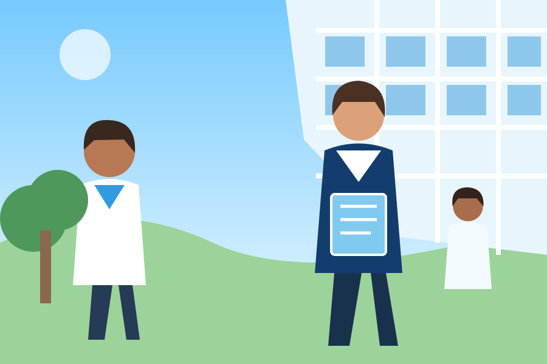

Health & Wellbeing
Coordinate support through authorized school staff.
CIRCA helps schools coordinate student wellbeing, health, school-life concerns, communication, support cases and approved absences — through one organized digital platform.

Coordinate support through authorized school staff.
Organize school-life concerns and safety issues.
Keep teachers, parents and school teams connected.
Check relevant approved permissions easily.
Limit access according to staff responsibilities.
Dedicated portals for school owners, teachers and staff, parents, and CIRCA Academy platform administration.